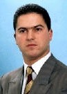

|
. |
TEIXEIRA, Francisco

E-mail: fjateixeira@clix.ptINFORMAÇÕES PESSOAIS:
Estado civil: Casado
Nacionalidade: Portuguesa
Local de nascimento: Freguesia de S. Paio, Concelho de Guimarães
QUALIFICAÇÕES ACADÉMICAS:
1987 - 1992: Licenciado em Ensino de Filosofia pela Faculdade de Filosofia da U.C.P., em Braga, com a média de 15 valores.
1994 - 1995: Componente curricular do Mestrado "Metafísica e Antropologia", pela Faculdade de Filosofia da U.C.P..
2000: Mestre em Filosofia pela Universidade do Minho, com a tese "O Mundo sem Fundamentos, uma Aproximação ao Neopragmatismo e ao Construtivismo" (com a nota final de Muito Bom, por unanimidade do júri).
Doutorando em Filosofia na Faculdade de Filosofia da U.C.P.
PROFISSÃO:
Professor profissionalizado de Filosofia, no Ensino Secundário, com 11 anos de serviço, na situação de Bolseiro do Ministério da Educação (pelo período de realização do doutoramento) e membro do quadro de nomeação definitiva da Escola Secundária de Oliveira de Frades.
Formador do Centro de Formação de Professores Francisco de Holanda e do Centro de Formação de Professores de Fafe.
Experiência de delegado do 10º Grupo B (grupo disciplinar de Filosofia, Psicologia, Sociologia e Psicossociologia) e respectiva participação no Conselho Pedagógico;
Experiência de direcção de turma;
Experiência de Ensino Recorrente;
Principal dinamizador do "I Torneio de Retórica da Escola Secundária Francisco de Holanda".
Principal dinamizador do "I Torneio de Retórica da Escola Secundária de Castelo de Paiva
Proponente da disciplina de "Educação Sexual" na Escola Secundária Francisco de Holanda e autor da proposta do respectivo programa.
Organizador, com o Conselho Executivo da Escola Secundária Francisco de Holanda, de um ciclo de conferências com personalidades de relevante interesse público, pedagógico e cultural, nomeadamente:
22 de Fevereiro de 2000 - "Dr. Emídio Guerreiro - Uma conversa com um homem com mais de cem anos", com o Dr. Emídio Guerreiro, detentor da Ordem da Liberdade, ex. líder do PPD e combatente da liberdade.
23 de Março de 2000 - "A Construção da Europa e a Memória do Fascismo", com o Doutor Pedro Bacelar de Vasconcelos, ex. Governador Civil de Braga, representante português no Observatório Europeu do Racismo e Xenofobia e membro do Conselho Consultivo da P.G.R..
3 de Maio de 2000 - "As Mulheres e a Democracia", com a Deputada Odete Santos, Deputada do Partido Comunista Português.
Edições:
Tese de Mestrado, "O Mundo sem Fundamentos, uma Aproximação ao Neopragmatismo e ao Construtivismo", policopiado, 2000.
"Variações Sobre a Razão", antologia de ensaios da componente curricular do mestrado em "Metafísica e Antropologia", policopiado, Junho de 1996.
COMUNICAÇÕES/CONFERÊNCIAS:
"Novas Gerações, que Futuro?", in Conferência: "Novas Gerações", Interact de Vizela, 24 de Novembro de 1996.
"Nós e os Outros ou uma Nova Ideia de Nação", in Sessão Solene do Dia do Concelho de Arganil, 8 de Junho de 1988.
"Rorty e a Verdade na Galáxia da Pós-Modernidade", in II Colóquio do Outono - "A Cultura na Galáxia da Pós-Modernidade",
Universidade do Minho, 18 e 19 de Novembro de 1999.
"Liberdade e Cidadania", in Rotários de Fafe, 14 de Março de 2000.
"Educação para a Cidadania", in Jornadas de Educação - "Escola - Educar para a Cidadania", Centro de Formação de Professores de Fafe, 4 de Março de 2000.
"Autopoiesis, Cognição e Linguagem", in XVI Encontro da Associação Portuguesa de Linguística, 28 a 30 de Setembro de 2000.
"A Escola, a Educação Sexual e a Identidade pessoal", "VI Congresso Galaico-Português de Psicopedagogia", Universidades do Minho e
da Corunha, 19, 20 e 21 de Setembro de 2001.
Cultura Matrística e Currículo, COLÓQUIO SOBRE QUESTÕES CURRICULARES: CURRÍCULO E PRODUÇÃO DE IDENTIDADES,
Instituto de Educação e Psicologia da Universidade do Minho, Janeiro de 2002.
ARTIGOS:
"A Vingança do Olhar" in Fragmentos 3, Ed. Escola Secundária de Castelo de Paiva, Junho de 1998.
"Elogio do Riso" in Fragmentos 4, Ed. Escola Secundária de Castelo de Paiva, Junho de 1999.
"Em busca de uma Taxinomia Conjectural", in Elo 7, Ed. do centro de Formação de Professores Francisco de Holanda, Novembro de 1999.
"A Educação Sexual na Escola", in Elo 8, Ed. do centro de Formação de Professores Francisco de Holanda, Dezembro de 2000.
"Biologia, Escola e Cidadania" in ELO 9, Ed. do Centro de Formação de Professores Francisco de Holanda, Dezembro de 2001.
"Formação Cívica e Educação para a Cidadania – Uma proposta Curricular" in ELO 9, Ed. do Centro de Formação de Professores Francisco de Holanda, Dezembro de 2001.
"A Propósito de «O Sentimento de Si» (ou o Erro de Damásio)", in Revista Portuguesa de Filosofia, Tomo LVIII, Fasc. 1, Janeiro - Março de 2002.
"Necrológio de Francisco Varela", in Revista Portuguesa de Filosofia, Tomo LVII, Fasc. 3, Julho – Setembro de 2001.
"Necrológio de Quine" in Revista Portuguesa de Filosofia, Tomo LVIII, Fasc. 1, Janeiro - Março de 2002.
Leccionação universitária no âmbito da realização do doutoramento
Seminário "Pós-Modernidade, Construtivismo Radical e Autopoiesis", no âmbito da Licenciatura em Filosofia da Faculdade de Filosofia da U.C.P., de Braga (ano lectivo 2000/2001).
Seminário "Teoria de Sistemas, Construtivismo e Identidade Pessoal", a decorrer no âmbito da Licenciatura em Filosofia da Faculdade de Filosofia da U.C.P. no ano lectivo 2001/2002, de Braga.
ORGANIZAÇÃO DE ACTIVIDADES UNIVERSITÁRIAS
Conjuntamente com outros dois docentes da Facfil, da UCP, curso "Biologia do Conhecimento e Psicologia Cognitiva Pós-Racionalista", com Humberto Maturana e Alfredo Ruiz, de 24 a 28 de Setembro de 2001.
Conjuntamente com outro docente da, Facfil da UCP, seminário "Identidade Pessoal: Caminhos e Perspectivas", de Março a Junho de 2002.
ACÇÕES DE FORMAÇÃO PARA PROFESSORES
"Educação, Liberdade e Cidadania", CFFH, CFPF.
"Educação Sexual e Integração Curricular", CFFH.
OUTRAS FUNÇÕES
Coordenador da redacção da revista Elo (Revista de Educação e Investigação Pedagógica), editada pelo Centro de Formação Francisco de Holanda, de Guimarães.
Colunista regular do Elo Online, publicação electrónica do Centro de Formação Francisco de Holanda, com os seguintes textos, todos presentemente online:
"Aristóteles na Internet".
"Cidade Educativa".
"Competências e Conteúdos".
"Educação e Alienação"
"Formandos e Formação".
"Literatura e Telecidadania".
"Psicoterapia e Ensino".
"Quem Educa os Educadores?".
"Vontade e Complexidade".
"Educação, Emoção e Futuro".
Coluna semanal no jornal "Notícias de Guimarães", intitulada "Palavras Cruzadas".
Coluna mensal no jornal "O Povo de Guimarães", intitulada "A Semana de ..."
Autor do programa radiofónico "Check-up", na Rádio Fundação, em Guimarães, a decorrer – semanal (programa de análise política, social, económica e cultural).
SERVIÇO PÚBLICO:
1986-1991 - Deputado Municipal na Assembleia Municipal de Guimarães, tendo ocupado o lugar de Presidente da Comissão Especializada de Educação e Cultura.
1989-1991 - Presidente da Assembleia de Freguesia de S. Paio, Guimarães.
1991-1992 - Vereador a meio tempo na Câmara Municipal de Guimarães, com os pelouros da Educação, Cultura, Tempos Livres, Turismo e Desporto.
1992-1995 - Vereador a tempo inteiro na Câmara Municipal de Guimarães, com os pelouros da Educação, Cultura, Tempos Livres, Turismo e Desporto.
1996-1997 - Organizador (e leccionador) de um "Curso Livre" (e gratuito) de Filosofia, para alunos do 11º ano de escolaridade, no Círculo de Arte e Recreio, uma das mais prestigiadas associações culturais de Guimarães.
1997-1988 - Organizador, no âmbito do Conselho Municipal de Juventude, de Guimarães, de um ciclo de conferências, de que se destacam:
Sobre o aborto, com a Dr.ª Maria José Nogueira Pinto (deputada do Partido Popular);
Sobre a elevação de Vizela a concelho, com o Dr. Fernando Aberto Ribeiro da Silva (ex. Governador Civil do Distrito de Braga) e com a Dr.ª Maria José Pacheco (historiadora da história local de Vizela);
Sobre as eleições autárquicas, com os vários candidatos à Câmara Municipal de Guimarães para o mandato1997-2000;
Organizador, em Novembro e Dezembro de 2000, das "I Conferências Mariano Felgueiras", em Guimarães, versando sobre as problemáticas social, económica e política locais.
Organizador, em Maio de 2002, das "II Conferências Mariano Felgueiras", em Guimarães, versando sobre as problemáticas social, económica e política locais.
Membro da Direcção da Associação de Socorros Mútua Artística Vimaranense, a mais antiga associação do Concelho de Guimarães.